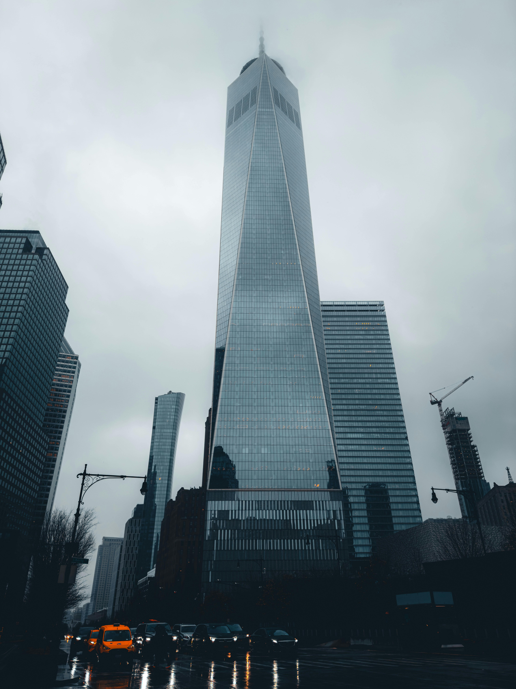
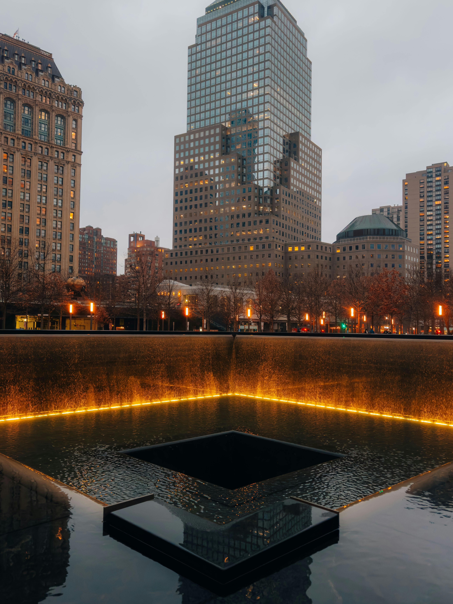
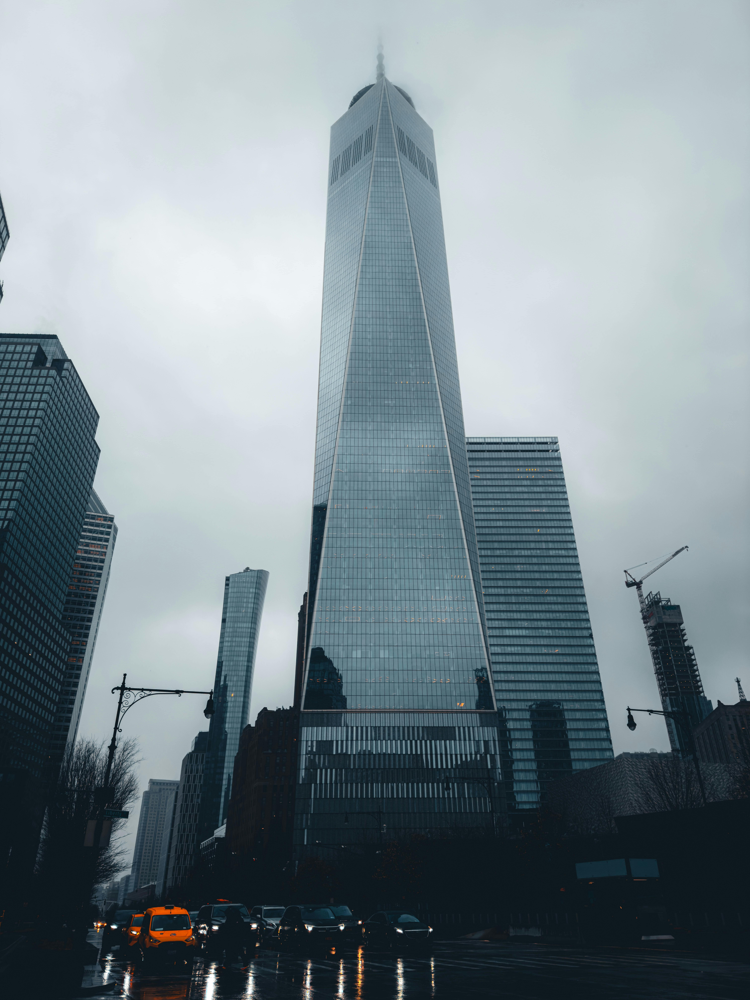
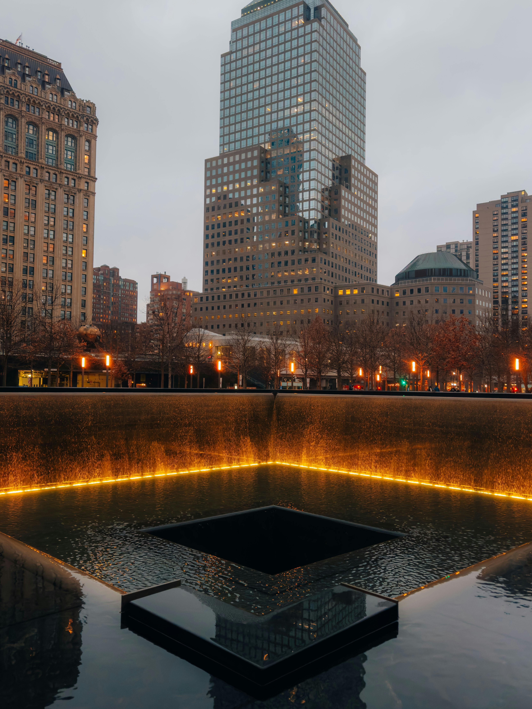

Observation Buildings and Memorials
Learn
When you visit New York City, you’re following the footsteps of some of the world’s greatest architects. Make sure you don’t miss these prime examples of their work that, together, make the great city what it is today.
.Activities
New York City's buildings, like the Empire State Building and One World Trade Center, offer breathtaking views and showcase the city's rich history and architectural innovation. Visiting these landmarks is a must for anyone exploring the city, visiting these buildings at certain parts of the day nay offer the best views for those into fotography or to simply have the experience of these views.
Admissions and tickets
| Empire State Tickets Per age | ||||||||
|---|---|---|---|---|---|---|---|---|
| Building | Children | Adults | Seniors | |||||
| Empire State | 38$ | 44$ | 42$ | |||||
| Building Deck | ||||||||
| Chlyser Building | Free | Free | Free | |||||
| Free To Visith | ||||||||
| World Trade Center Memorial | Free | Free | Free | |||||
| Admissions | ||||||||
| One World Trade Center | Standart: 39$ | All Inclusive: 59$ | VIP: 69$ | |||||
Hours of Operation
Empire State: 9:00am - 11:00pm. (hours may vary)
One World Trade Ceneter: 9:00am - 11:00pm
World Trade Center Memorial: 8:00am - 8:00pm
Chrysler Building: 8:00am - 6:00pm
Directions
Empire state
Empire State Building, 20 W 34th St., New York, NY 10001